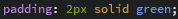

Вставка изображения
Здесь можно не только легко вставить изображение, но и красиво его оформить. Например смещение, рамки и их толщина и цвет, прозрачность и многое другое.
Не стоит забывать о том, что каждый подобный элемент сайта лучше всего оформлять отдельным селекторов по id, для того чтобы все свойства применялись для обьекта.
Сразу разбераем касающиеся свойства данного селектора и их значения.
- background-image - установить в качестве фона следующий рисунок.
- url(ссылка на изображение)
- width - ширина, указывается в процентах (%) или пикселях (px).
- height - высота, указывается в процентах (%) или пикселях (px).
- float - расположение данного блока.
- left
- right
- center
- inherit
- background-size - параметр заполнения.
- auto
- contain - значение, при котором изображение не выйдет за грани.
- cover - своеобразная "шапка". Указывается в верхней части сайта.
- margin-top; -bottom; -left; -right - внешние отступы, могут задаваться сразу для всех сторон, а могут отдельно для каждой стороны; указывается в процентах (%) или пикселях (px).
- padding-top; -bottom; -left; -right - отступы внутри самого блока, указываются точно также как и внешние.
- border - грани, данное свойство может задаваться сразу на все стороны, то есть получится рамка, или же по отдельности каждая грань при добовлении свойств: -top; -bottom; -left; -right. А после указания толщины границ в пикселях, нужно указать цвет грани, воспользовавшись свойством solid цвет. Примерно вот так:  - задана рамка тощиной в 2 пикселя зеленого цвета.